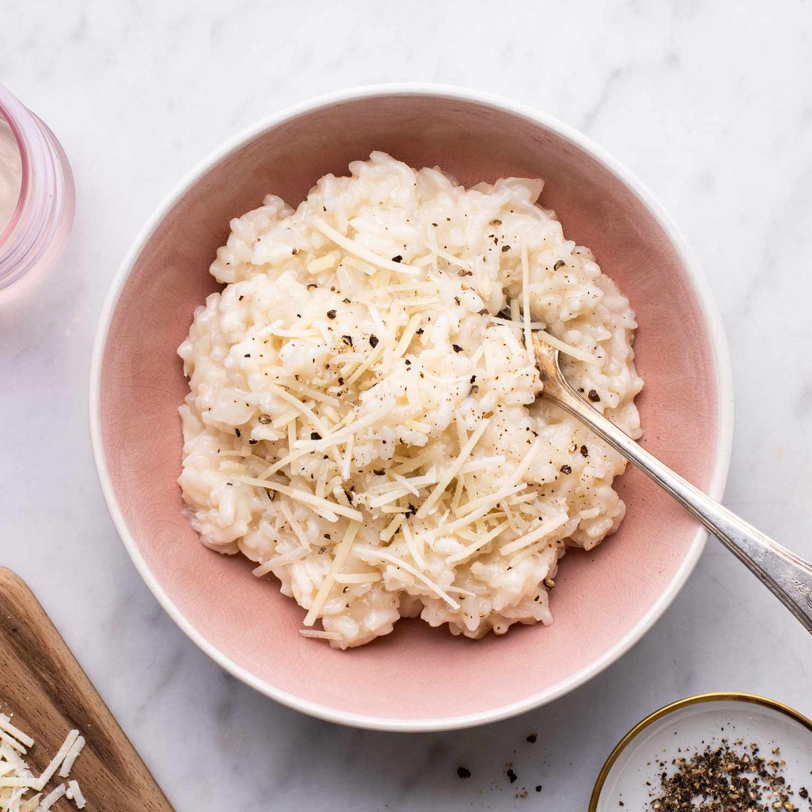

Risotto

Description
A tasty italian dish. The base is easy to get right, and you can make all kinds of variations you can think of!
Ingredients
- 400g Arborio rice
- 4 shallots, finely diced
- Butter
- Olive oil
- Half a bottle of white wine
- Another half bottle of white wine
- 2 cloves of garlic, minced
- 1l Chicken stock
- 100g of pecorino cheese, shredded
- Salt, pepper
Steps to reproduce
- Start by mincing the shallots
- Start warming the chicken stock in a pot
- Put the stove on medium heat
- In a frying pan with high edges, sauteé the shallots in olive oil and butter
- When the shallots are golden, pour in the rice
- Stir the rice for a few minutes, they should turn transparent
- Pour in wine so the contents of the pan are covered
- Stir the rice gently
- Pour a glass of wine for the chef
- When the wine has vaporized, pour some chicken stock to almost cover the rice
- Keep stiring the risotto from time to time, and add more stock when the previous has vaporized
- After about 20 minutes, the Risotto should have the correct consitency
- When its done, take the pan from the heat, add a fat slice of butter and the pecorino, stir and.
- Add salt and pepper to taste.
- Serve